Day 20｜高第建築、留言本的巧合、註定的相遇
2026 年 6 月 9 日 · Hospital de Órbigo → Rabanal del Camino · 37km
昨晚 Hospital de Órbigo 的中世紀長槍對決實在太瘋狂了，戰馬嘶鳴、長槍折斷的畫面到現在還在腦海裡轉。帶著那份熱血，我們今天依然摸黑出發——今天距離不短，要一口氣推進 37 公里，雙腳才剛醒就得上工，有夠硬。
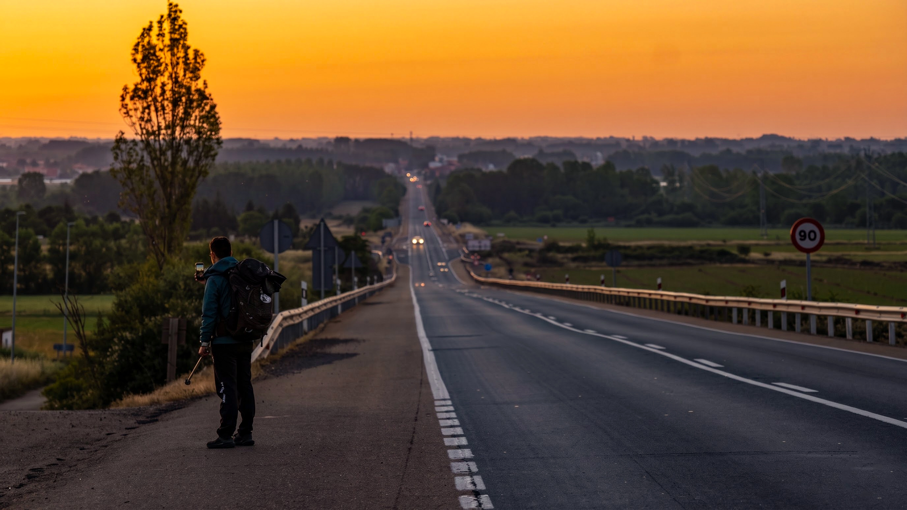
在這裡，意味著終於熬過了漫長的 Meseta 平原，準備迎接遠方的連綿山脈。迎著日出的晨光出發，腳下的黃土路像一條金色的絲帶，一路延伸到地平線。看著這遼闊的上帝視角，晨光灑落大地，心裡滿滿的自由與喜悅——原來走出平原的感覺，是這麼爽快。
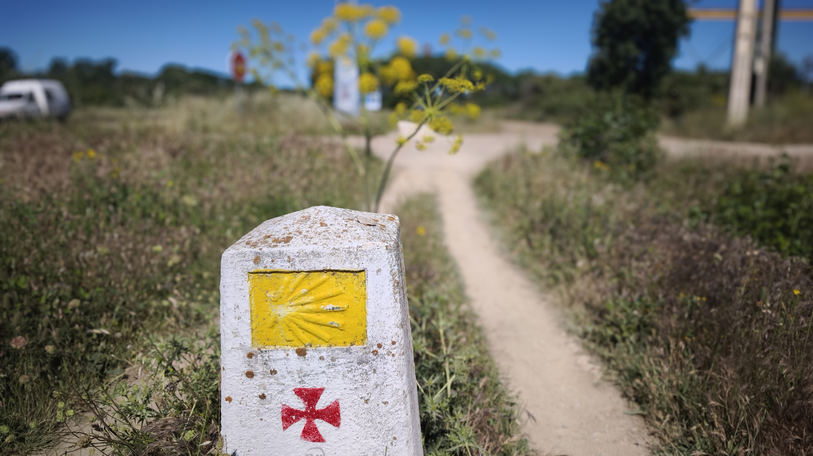
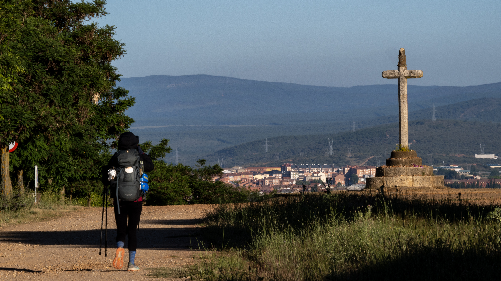
路邊這座朝聖者銅像吸引了我的目光，幾百年來，走在這條路上的人換了一批又一批，但那份身體的疲勞、和喝下這口水的痛快感，絕對是一模一樣的。這畫面太真實了，先補個水，我們繼續上路。走到第 20 天，最初的新奇感已經褪去——一開始每條路都很新奇，看到教堂會拍照、遇到陌生人會興奮，但走到現在，不用刻意找方向，順著黃色箭頭走就對了。褪去所有觀光客的濾鏡，當這一切成為日常，才是最真實的 Camino。
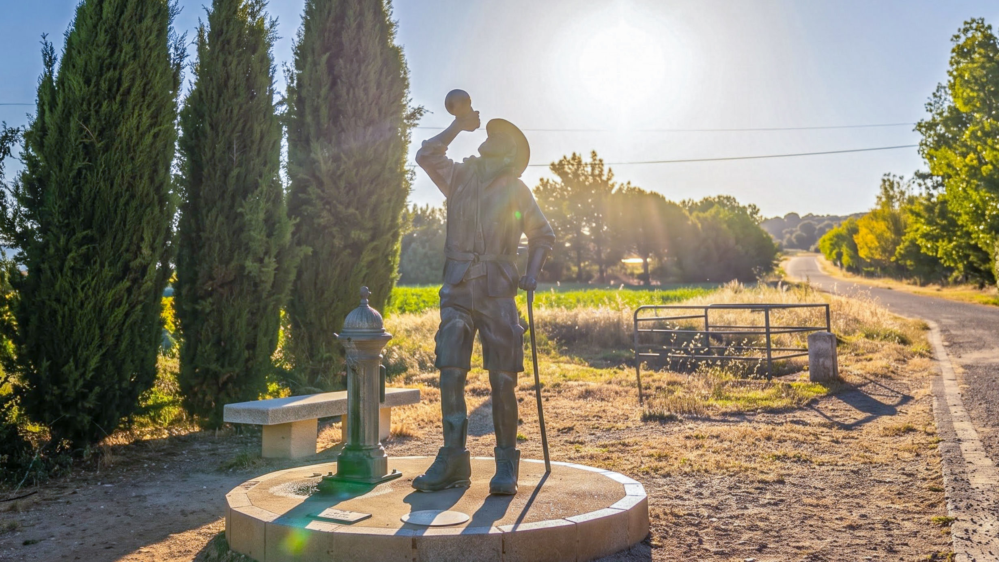
進入阿斯托加（Astorga）市區，這裡可是有名的「巧克力之都」，整座城都飄著可可的甜香。不過真正讓我大開眼界的在後面——廣場上的雄獅雕像威風登場，而眼前這座雄偉的阿斯托加主教座堂，直接把我釘在原地。高第在打造舉世聞名的聖家堂之前，先在這裡留下了這座視覺衝擊力爆表的作品，門上的立體石雕細節直接拉滿，那種極致的莊嚴與震撼，真的要站在現場才能感受。
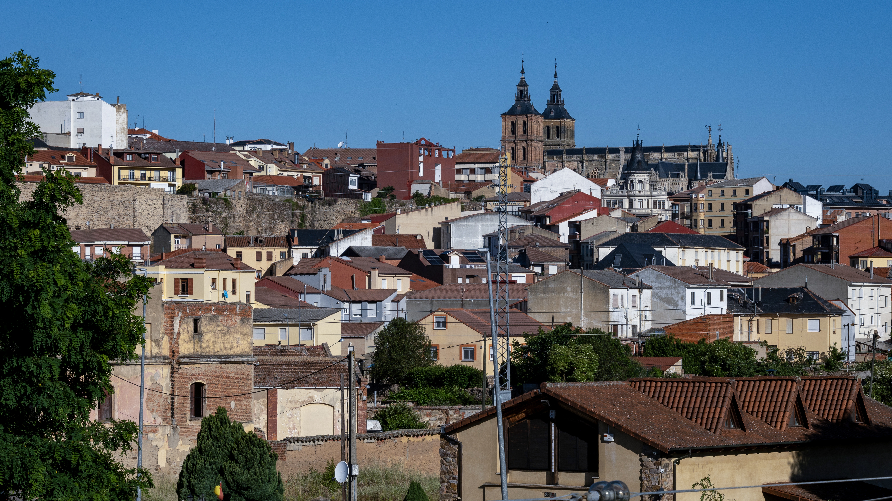
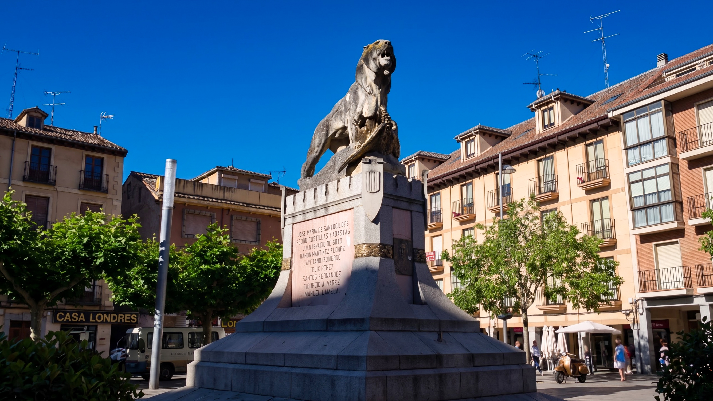
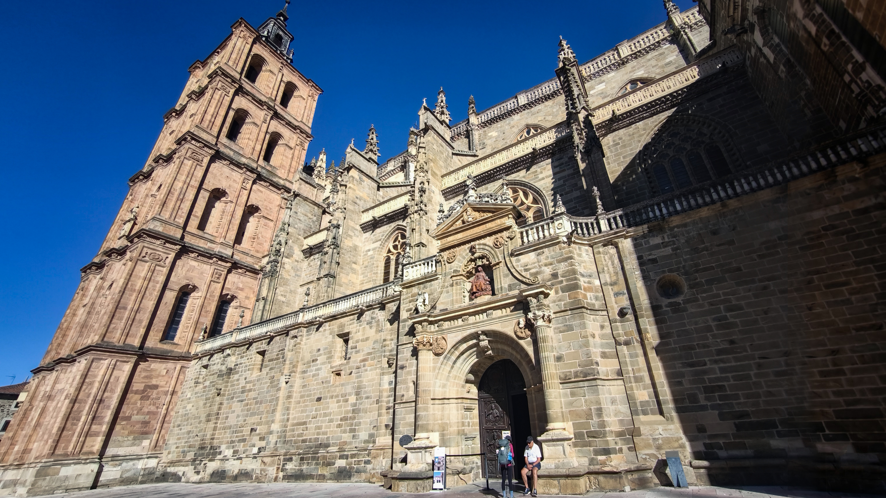
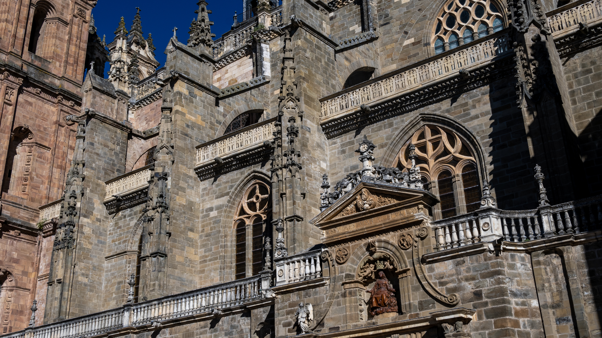
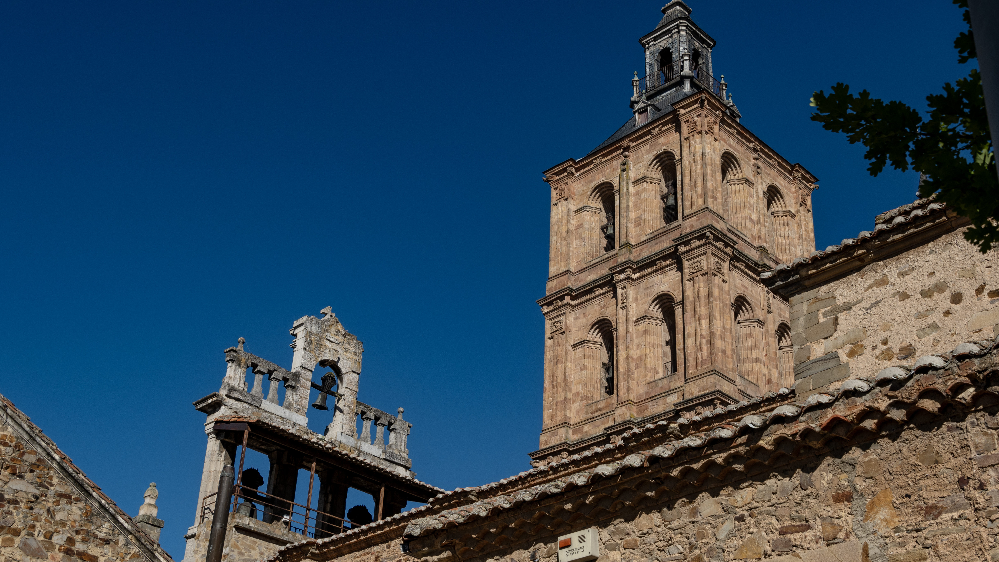
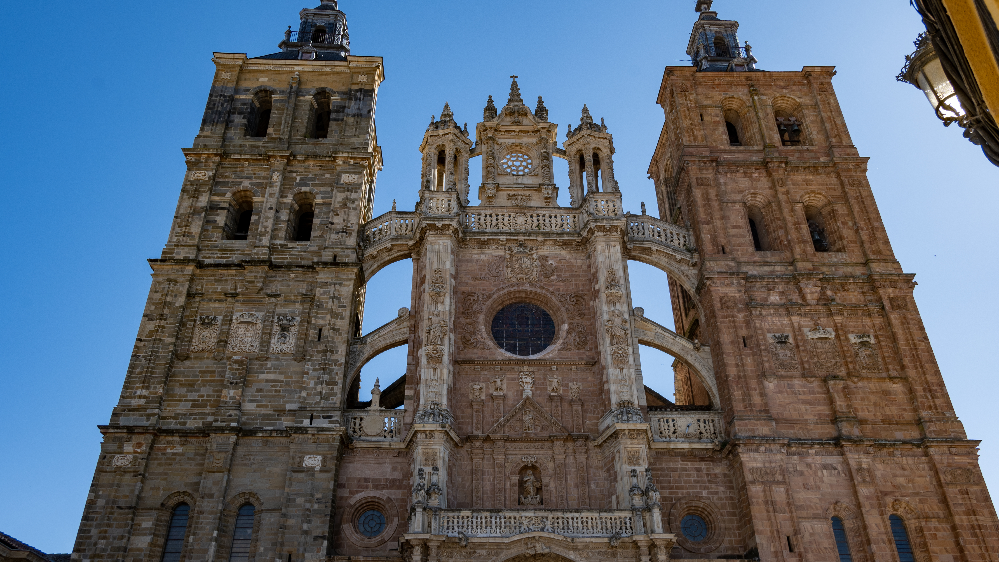
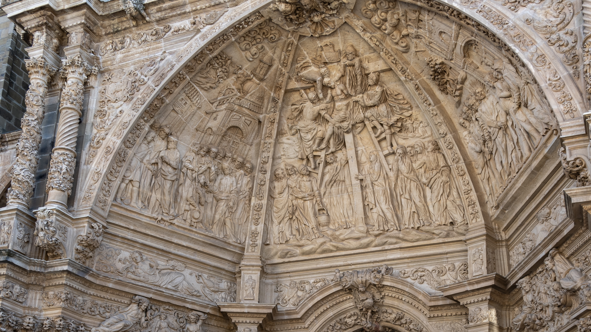
早餐時間！隨機走進教堂旁的一間 Bar，爬上二樓直接被眼前的視野驚呆——超美的半圓形採光窗，直接把高第的夢幻城堡框成了一幅畫。坐在 VIP 級的專屬窗景前吃早餐，看著陽光灑在石牆上，這一餐真的太享受了啦！
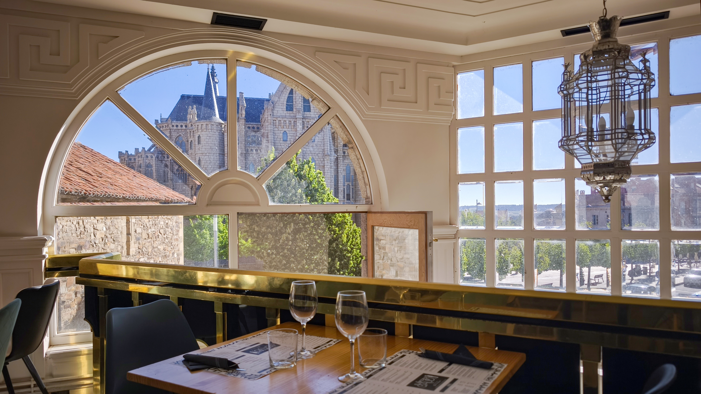
離開了雄偉的教堂，但今天最震撼的，其實不是任何建築。在路上，我遇到了一對台灣情侶，邊走邊聊、隨口聊起彼此出發的日期，我突然想起在 Zubiri 庇護所的留言本上，看到的那行無比親切的中文：「世界很大，人很渺小，感謝每一個遇見、幫助與微笑。Buen Camino」。我跟他們分享了這件事，結果下一秒，他們笑著說——那就是他們寫的。誰能想到，走了十八天，在幾百公里外的這裡，我居然遇見了這段文字的主人！那瞬間我整個人起雞皮疙瘩，這機率到底有多低？在 Camino 上，沒有什麼是偶然的，每一段相遇都有意義。也許我們走這條路，不只是為了到達終點，而是為了遇見那些原本一輩子都不會交集的人。
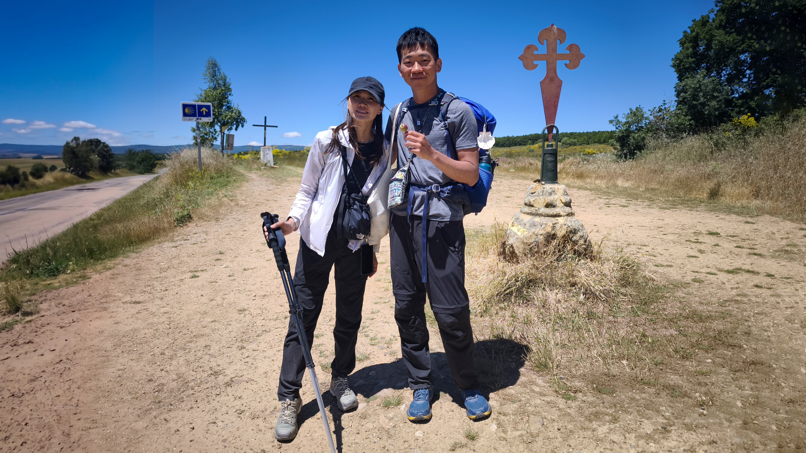
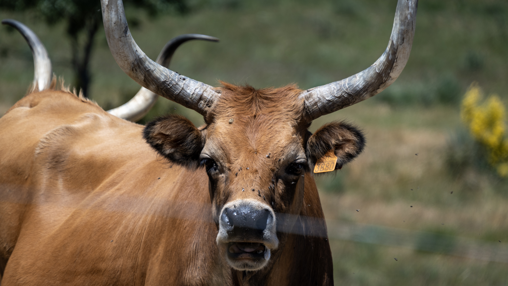
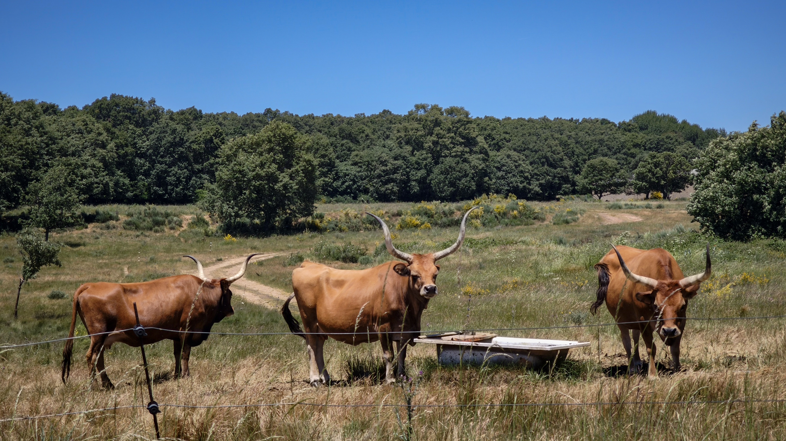
一路聊著笑著，終於抵達山間小鎮 Rabanal del Camino 的庇護所，37 公里的疲勞在放下背包那一刻全湧上來。今晚沒有神聖的晚禱，但下午茶時間，牧師卻像個老朋友一樣，留給我們一句話：「只要堅持往前走，並且打開心胸去接受路上的所有事物，一切都是最好的。」嗯，今天的相遇，大概就是這句話最好的證明吧。
📚 朝聖者小百科：Astorga
阿斯托加（Astorga）是朝聖之路上的「巧克力之都」，19 世紀靠可可貿易致富，城裡至今飄著巧克力香， manteca 酥餅和巧克力是必買伴手禮。而它最出圈的地標，是高第設計的主教宮（Palacio Episcopal）——高第在打造聖家堂之前，在這裡留下的一座童話城堡，灰白花崗岩外牆、尖塔與護城河，配上天使石雕，走到現場真的會倒吸一口氣。
而屬於我的 Astorga 記憶，卻是那本留言本的巧合：18 天前在 Zubiri 庇護所看到的一行中文，18 天後在幾百公里外遇見了寫下它的台灣情侶。世界很大，人很渺小，但感謝每一個遇見、幫助與微笑——Buen Camino。
🥾 37km · 從平原走進山脈、從新奇走進日常的一天
| 早餐：烘蛋＋咖啡 | €5.6 |
| 自由捐贈果汁 | €5.0 |
| 庇護所自由捐贈 | €10.0 |
| 超商：啤酒、酒、零食 | €5.4 |
| 晚餐自煮 | €5.0 |
| 合計 | €31.0 |
🎬 對應 Vlog EP6｜濃霧中的鐵十字架！放下石頭後真的會變輕嗎？入住《西班牙寄宿》拍攝地